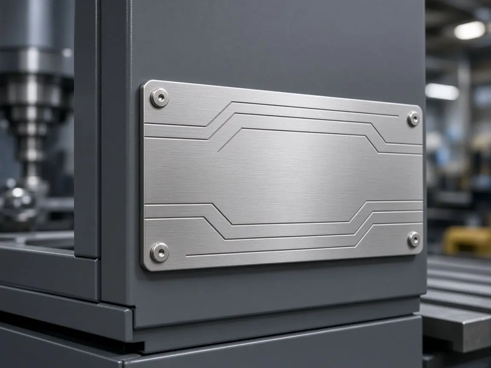

Accueil/Industrie/Façades et plaques métal/Plaque constructeur
Industrie · Plaques métal
La plaque constructeur sur mesure
Aluminium, inox ou laiton : la plaque qui porte l’identité de votre machine et ses mentions obligatoires, imprimée, gravée et découpée à Marckolsheim.
Ce que c’est
La plaque constructeur, aussi appelée plaque signalétique ou plaque d’identification, est fixée sur une machine ou un équipement. Elle porte les informations qui l’identifient et assurent sa traçabilité, ainsi que les mentions obligatoires.
Elle doit rester lisible pendant toute la vie de l’équipement : c’est ce qui guide le choix du métal, du marquage et de la fixation.
Notre savoir-faire
Le métal est notre premier métier : PIM est née en 1961 sous le nom de Plaquettes Industrielles de Marckolsheim, pour la découpe et le formage du métal. Depuis, la sérigraphie, puis la découpe laser du métal (2020), sont venues compléter l’atelier.
Nous réalisons aussi les autres plaques de la machine : plaque d’outillage, plaque de tare, plaque de conformité électrique ou de certification (type CE). Pour l’habillage de la machine, voyez nos façades métal et nos faces avant plastique.
Les mentions
Vous nous transmettez le contenu de la plaque : raison sociale, désignation, modèle, numéro de série, caractéristiques, marquage CE ou autre logo de certification. Nous le mettons en page, vous validez un bon à tirer, puis nous fabriquons.
Le contenu réglementaire reste défini par le fabricant de la machine. Nous vous conseillons sur la lisibilité, la taille des caractères et le procédé de marquage le plus durable.
Besoin de marquages variables d’une plaque à l’autre (numéros de série, QR codes, codes-barres) ? Indiquez-le dans votre demande : c’est un point que nous étudions avec vous, selon votre cahier des charges et vos quantités.


Marquage
Trois façons de marquer le métal.
Sérigraphie. Quatre lignes feuille à feuille impriment le métal. Teintes Pantone, RAL ou NCS mesurées au spectromètre, encres couleur ou mates : une couche épaisse, qui tient dans le temps.
Gravure laser. Nos lasers SEI et Eurolaser gravent textes, formes et logos de façon définitive, sur aluminium, inox ou laiton. Voir la gravure sur aluminium. Une gravure chimique est aussi possible sur le métal, selon la pièce.
Embossage. Un relief jusqu’à 1 mm met le marquage en volume.
La plaque est ensuite découpée à la forme, au laser avec une tolérance inférieure à ± 0,3 mm ou sous presse pour les séries, puis fixée par adhésif ou par perçage.
Particuliers
Vous êtes un particulier ? Nous étudions aussi les demandes à l’unité, au cas par cas.
Une plaque gravée, une étiquette personnalisée : décrivez simplement votre idée, le champ Société est facultatif.
Spécifications
En bref
Quantités et délais sont précisés au devis, selon la pièce et la série.
Fichiers acceptés avec la demande : PDF, DXF, DWG, AI, JPG ou PNG. Un mot technique vous échappe ? Le glossaire.
| Matériaux | Aluminium, inox ou laiton, plusieurs finitions |
|---|---|
| Marquage | Sérigraphie, gravure laser, gravure chimique selon la pièce |
| Relief | Embossage jusqu’à 1 mm |
| Découpe | Laser (tolérance inférieure à ± 0,3 mm) ou presse |
| Fixation | Adhésif ou perçage |
| Usages | Plaque constructeur, d’identification, de conformité, de tare, d’outillage, de certification |
| Séries | De l’unité à la grande série |
| Quantité minimale | Sur devis |
Questions fréquentes
La plaque constructeur, en pratique.
Les réponses aux questions qu’on nous pose le plus. Réponse à votre demande de devis sous 48 h ouvrées.
Quel métal choisir pour une plaque constructeur ?
Aluminium, inox ou laiton, selon l’environnement de la machine, l’aspect voulu et le mode de fixation. Nous vous conseillons avant le devis.
Gravure ou sérigraphie ?
La gravure laser marque de façon définitive ; la sérigraphie apporte la couleur. Les deux se combinent, et l’embossage ajoute du relief. Le choix se fait selon l’usage et la durée de vie attendue.
Pouvez-vous faire une plaque de conformité CE ?
Oui : plaque de conformité électrique ou de certification (type CE). Le contenu réglementaire est fourni par le fabricant de la machine ; nous assurons la mise en page et la fabrication.
Comment la plaque est-elle fixée ?
Par adhésif au dos ou par perçage, selon le support et les contraintes.
Faites-vous des plaques à l’unité ?
Oui, nous étudions les demandes à l’unité au cas par cas, y compris pour les particuliers. Les séries vont jusqu’à la grande série.
Pouvez-vous ajouter un numéro de série ou un QR code ?
C’est un point à étudier ensemble : précisez-le dans votre demande de devis, avec vos quantités et la durée de vie attendue, et nous vous orienterons selon votre cahier des charges.
Que faut-il envoyer pour un devis ?
Les dimensions, le texte et les logos (PDF, DXF, DWG, AI, JPG ou PNG), le métal souhaité, la fixation et les quantités. Nous répondons sous 48 h ouvrées.